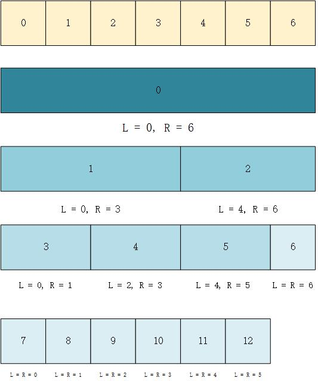

高效的区间二叉搜索树：线段树
与树状数组类似，线段树也是一种用来维护区间信息的数据结构，可以在对数时间复杂度内实现更新和查询等操作。但相较于树状数组多用于前缀和查询不同，线段树的应用范围更为广泛，例如区间最值等问题，代价是需要消耗更多的存储空间。
结构
对于一个长度为 7 的数组，根据该数组 nums 元素建立的线段树结构如下图所示。
每个结点存储的值为区间 nums[L ~ R] 的元素和，其中根节点对应的 L = 0, R = 6，即整个数组的元素和。然后每一层的结点将区间均分为 [L, (L + R) / 2] 和 [(L + R) / 2 + 1, R] 两部分。注意按此方式进行划分，得到的两个子区间始终满足：左右区间长度分别为 len1 和 len2，且 len1 == len2 || len1 == len2 + 1。不难得知：这样的结构构成一个完全二叉树，因此使用顺序存储将会变得很方便：根节点下标为 0；对于每个下标为 idx 的结点，其左孩子下标为 2 * idx + 1，右孩子下标为 2 * idx + 2。

构造
由于叶子结点的 L 和 R 相等，其值正好为 nums[L]，而每个父结点的值为其两个子结点的值之和，因此可以利用动态规划的思想，先将每个叶子结点的值求出，再依次求出其对应的父结点的值，最终完成线段树的建立。
有一个值得注意的细节就是关于线段树数组 tree 的长度问题。若线段树正好构成一个满二叉树，那么树的深度（令根结点深度为 1）为 logm + 1（m 为 nums 长度，正好为 2 的幂），则当 nums 的长度为 n （n 为任意正整数）时，树的深度为 ⌈logn⌉ + 1.
若给树最底层的空结点也分配空间，则结点总数 cnt = 2⌈logn⌉ + 1 - 1.
令 n = 2x，有 cnt = 2 * 2x - 1 = 2 * n - 3.
令 n = 2x + 1，有 cnt = 4 * 2x - 1 = 4 * n - 5.
可见始终有 cnt < 4 * n，因此为了方便起见，通常情况下直接令 tree 的长度为 4 * n.
查询
查询区间 nums[p ~ q] 的元素和时，若正好可以查询到当前结点 node 对应的区间为 [L, R] 且有 L == p && R == q，那么此时的 tree[node] 即为所要查找的区间和，直接返回即可；
否则可将其进行拆分为两个子区间，查找这两个子区间的值，将其求和后返回。如需要查找 nums[2 ~ 4] 的元素和，可将其划分为 nums[2 ~ 3] + nums[4 ~ 4]，分别在根节点的左右两个子树中查找。
更新
更新与构造做法类似，同样是先修改叶子节点，再依次向上修改。
不同之处在于更新每次只需要处理一个分支，时间开销 T(n) = T(n / 2) + O(1)，时间复杂度为 O(logn)；而构造时左右子树均需要处理，时间开销 T(n) = 2 * T(n / 2) + O(1)，时间复杂度为 O(n).
代码实现
1 | class segmentTree { |
 微信
微信 支付宝
支付宝